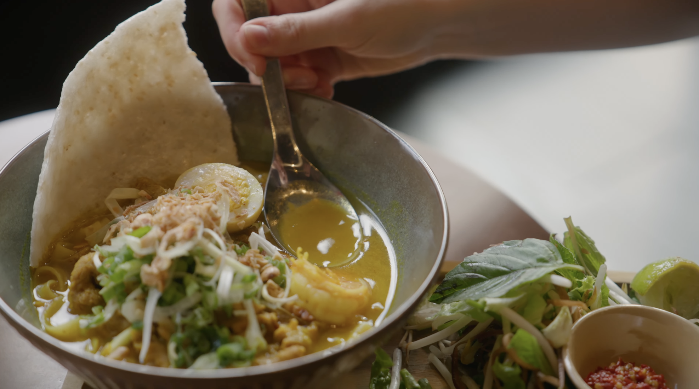
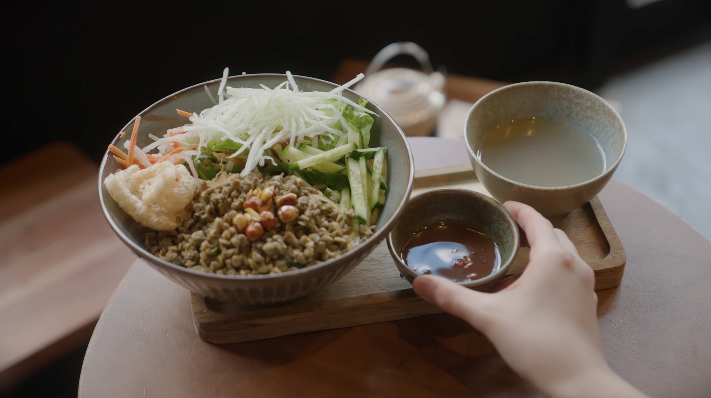

YouTube Documentary
mộc mạc
Worked as assistant camera on a documentary profile centered on food, culture, and intimate visual storytelling. Supported the camera department through lens changes, gear organization, and shooting flow while helping the production maintain a polished documentary look.

View Film
